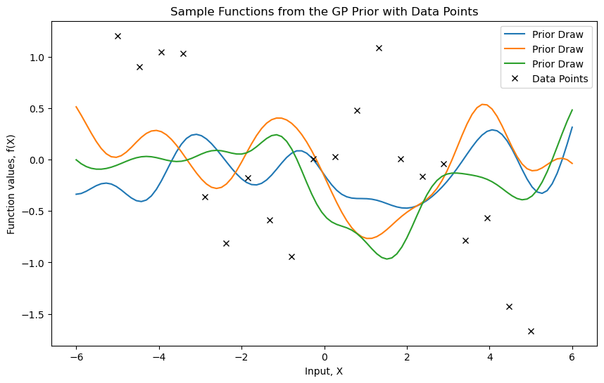
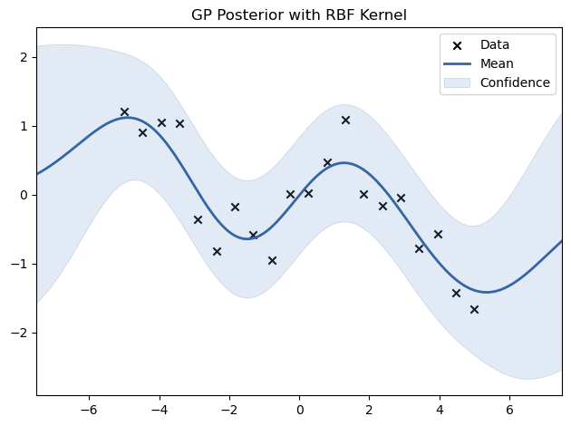
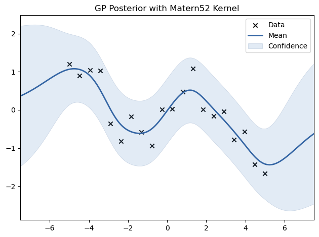
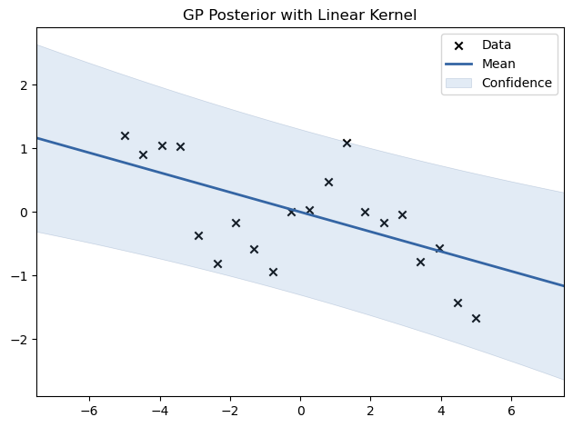
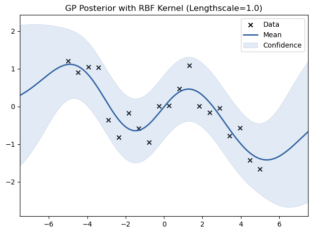
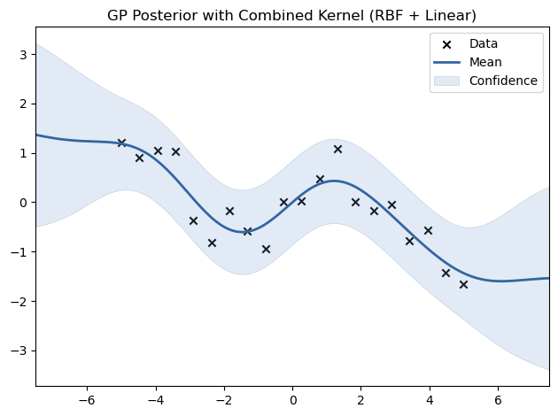

Gaussian Process Regression#
This lab explores Gaussian Process Regression (GPR) using the GPy library. We will cover topics including visualizing the GP prior, fitting a GP model, kernel selection, hyperparameter tuning, sparse GPs, and evaluation.
To get us started, let’s install the necessary libraries, imports and generate some synthetic data.
# Install necessary libraries (uncomment if needed)
# !pip install GPy
import GPy
import numpy as np
import matplotlib.pyplot as plt
%matplotlib inline
# Generate synthetic data
np.random.seed(42)
X_train = np.linspace(-5, 5, 20)[:, None]
Y_train = np.sin(X_train) + 0.5 * np.random.randn(20, 1) # Noisy sine wave data
# Define test points for visualization
X_test = np.linspace(-6, 6, 100)[:, None]
Background#
Gaussian Process Regression (GPR) provides a non-parametric Bayesian framework for regression. Let’s review the formulation of GPR before we run some code:
1. Gaussian Process Definition#
A Gaussian Process is defined as a collection of random variables, any finite number of which have a joint Gaussian distribution. It is specified by:
A mean function \(m(x)\)
A covariance function (or kernel) \(k(x, x')\)
Where: $\( m(x) = \mathbb{E}[f(x)], \quad k(x, x') = \mathbb{E}[(f(x) - m(x))(f(x') - m(x'))] \)$
Typically, the mean function is assumed to be zero (\(m(x) = 0\)).
2. Prior Distribution#
Given a set of \(N\) input points \(X = \{x_1, x_2, \dots, x_N\}\), the corresponding function values \(f(X)\) follow a multivariate Gaussian distribution:
Where \(K(X, X)\) is the covariance matrix computed using the kernel \(k(x, x')\).
We start by generating noisy data from a sine function. Then, we visualize sample functions from a Gaussian Process prior.
# Define an RBF kernel
kernel = GPy.kern.RBF(input_dim=1, variance=1.0, lengthscale=1.0)
# Visualize the GP prior
model_prior = GPy.models.GPRegression(X_test, np.zeros(X_test.shape), kernel)
plt.figure(figsize=(10, 6))
# Plot prior samples
for _ in range(3):
sample = model_prior.posterior_samples_f(X_test, size=1).squeeze()
plt.plot(X_test, sample, lw=1.5, label="Prior Draw")
# Plot data points
plt.plot(X_train, Y_train, 'kx', label="Data Points") # 'kx' for black crosses
plt.title("Sample Functions from the GP Prior with Data Points")
plt.xlabel("Input, X")
plt.ylabel("Function values, f(X)")
plt.legend()
plt.show()

3. Likelihood with Noise#
For noisy observations \(y\), the outputs are modeled as:
The likelihood becomes:
4. Posterior Distribution#
Given the observed data \((X, y)\), the goal is to predict the function value \(f(x_*)\) at a new input \(x_*\). The joint distribution of \(y\) and \(f(x_*)\) is:
From the properties of multivariate Gaussians, the posterior predictive distribution \(f(x_*) | X, y, x_*\) is:
Where:
Mean: $\( \mu(x_*) = K(x_*, X) [K(X, X) + \sigma_n^2 I]^{-1} y \)$
Variance: $\( \sigma^2(x_*) = K(x_*, x_*) - K(x_*, X) [K(X, X) + \sigma_n^2 I]^{-1} K(X, x_*) \)$
We now fit a GP model to the generated data using an RBF kernel.
# Fit GP model with RBF kernel
model = GPy.models.GPRegression(X_train, Y_train, kernel)
model.optimize(messages=True)
# Plot posterior
model.plot(title="GP Posterior with RBF Kernel")
plt.show()

5. Kernel Function#
The kernel \(k(x, x')\) defines the covariance between function values and encapsulates assumptions about the function. Common kernels include:
Radial Basis Function (RBF): $\( k(x, x') = \sigma_f^2 \exp\left(-\frac{|x - x'|^2}{2 \ell^2}\right) \)\( Where \)\ell\( is the length scale and \)\sigma_f^2$ is the signal variance.
Matern Kernel: $\( k(x, x') = \sigma_f^2 \frac{2^{1-\nu}}{\Gamma(\nu)} \left( \frac{\sqrt{2\nu} |x - x'|}{\ell} \right)^\nu K_\nu \left( \frac{\sqrt{2\nu} |x - x'|}{\ell} \right) \)\( Where \)\nu\( controls smoothness and \)K_\nu$ is the modified Bessel function.
We experiment with different kernels, including RBF, Matern, Periodic, and Linear, to see how they affect the fit.
# Define and fit models with different kernels
kernels = {
"RBF": GPy.kern.RBF(input_dim=1),
"Matern52": GPy.kern.Matern52(input_dim=1),
#"Periodic": GPy.kern.Periodic(input_dim=1),
"Linear": GPy.kern.Linear(input_dim=1),
}
for name, kernel in kernels.items():
model = GPy.models.GPRegression(X_train, Y_train, kernel)
model.optimize()
model.plot(title=f"GP Posterior with {name} Kernel")
plt.show()


6. Training: Hyperparameter Optimization#
The kernel hyperparameters (e.g., \(\ell\), \(\sigma_f^2\), \(\sigma_n^2\)) are learned by maximizing the log marginal likelihood:
Where \(\theta\) represents the hyperparameters of the kernel.
This mathematical background provides a foundation for understanding the theoretical aspects of Gaussian Process Regression.
# Experiment with different lengthscales for the RBF kernel
for lengthscale in [0.5, 1.0, 2.0]:
kernel = GPy.kern.RBF(input_dim=1, lengthscale=lengthscale)
model = GPy.models.GPRegression(X_train, Y_train, kernel)
model.optimize()
model.plot(title=f"GP Posterior with RBF Kernel (Lengthscale={lengthscale})")
plt.show()

7. Experimenting with Different Kernels#
# Experimenting with Combined Kernels
kernel_combined = GPy.kern.RBF(input_dim=1) + GPy.kern.Linear(input_dim=1)
model_combined = GPy.models.GPRegression(X_train, Y_train, kernel_combined)
model_combined.optimize()
model_combined.plot(title="GP Posterior with Combined Kernel (RBF + Linear)")
plt.show()

You can implement a K-fold cross-validation to evaluate model performance more robustly (Note that this code needs changing if you work with time-series data):
from sklearn.model_selection import KFold
from sklearn.metrics import mean_squared_error
# K-Fold Cross-Validation
kf = KFold(n_splits=5)
mse_scores = []
for train_index, test_index in kf.split(X_train):
X_cv_train, X_cv_test = X_train[train_index], X_train[test_index]
Y_cv_train, Y_cv_test = Y_train[train_index], Y_train[test_index]
# Fit GP model
model_cv = GPy.models.GPRegression(X_cv_train, Y_cv_train, kernel)
model_cv.optimize()
# Predict and calculate MSE
Y_cv_pred, _ = model_cv.predict(X_cv_test)
mse = mean_squared_error(Y_cv_test, Y_cv_pred)
mse_scores.append(mse)
print(f"Cross-validated MSE: {np.mean(mse_scores):.4f} ± {np.std(mse_scores):.4f}")
Cross-validated MSE: 0.7188 ± 0.5631